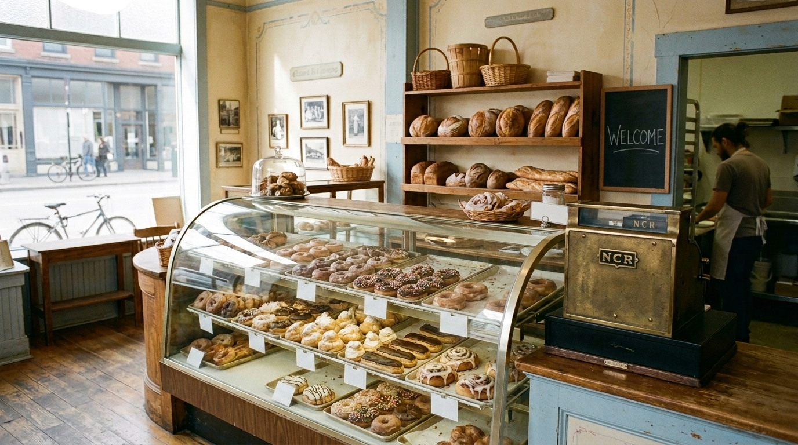
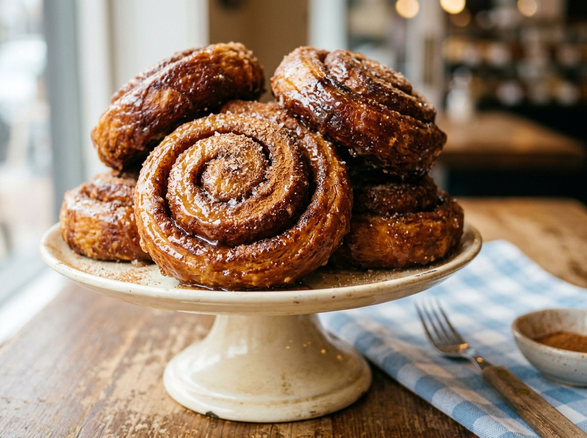
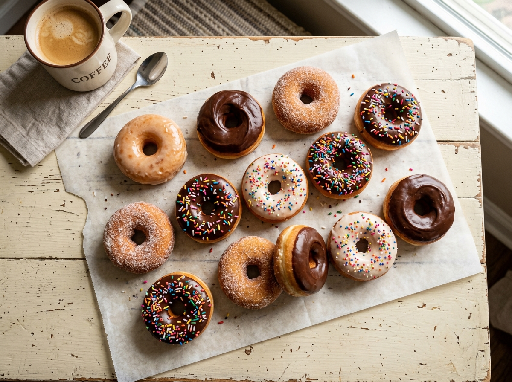
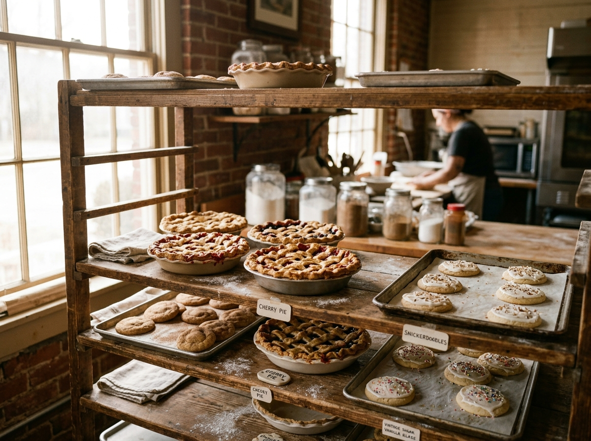
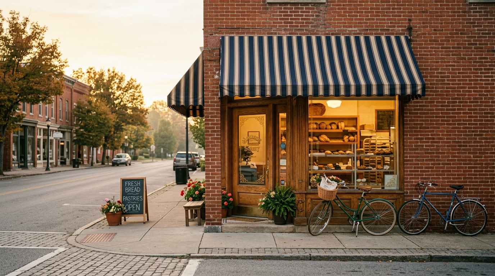

Open Early Mon–Sat from 6 AM · closed Sundays

Nearly a century of donuts, cream puffs, pies and cakes — baked fresh before dawn on Jefferson Street. Folks come from across Indiana for a box, and get there early, because the good stuff goes fast.
What's in the case
Ninety-some years of the recipes the town grew up on — pulled from the oven every single morning.

The signature. Locals call them "Ossian rolls" — and they'll fight you for the last one.

Cake, yeast, glazed twists, blueberry cake — and the legendary Texas donut, bigger than your head.
"Out of this world," say the regulars. We're inclined to agree.

Sugar cream pie — the Indiana classic, and "the best around" — plus cookies decorated for every season.

Since 1931
The Heyerly family opened this bakery in 1931, and for generations the four Heyerly brothers filled Ossian's mornings with the smell of fresh donuts. In 2019 the Short family took the counter — and the recipes, and the promise. As the new owners put it: "Why would we change something that's been around that long? Those are iconic."
Word around Wells County
4.6 stars across more than 500 reviews — and the tourism board calls us "a Wells County must-stop."
The fried cinnamon rolls are to die for. The cream puffs are out of this world.
Best donuts ever!!! Blueberry cake donuts, fried cinnamon… delicious! We've dubbed them "Ossian rolls."
Old-school bakery… like Krispy Kreme without driving to Indy. The glazed twists just melt.